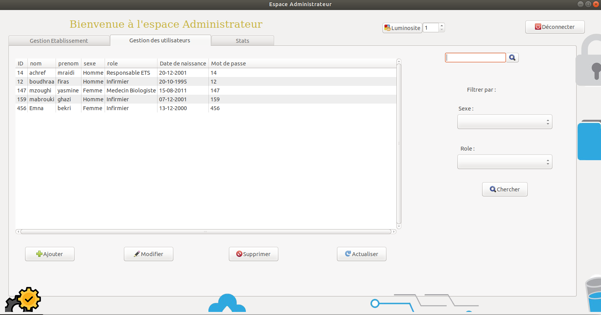

A Blood Donation Center Management application, developed in the versatile C language, offers a robust and efficient solution for managing donor information, blood inventory levels, and appointment scheduling. Its user-friendly interface and reliable database system streamline operations, significantly enhancing the center's ability to serve donors and recipients effectively.
